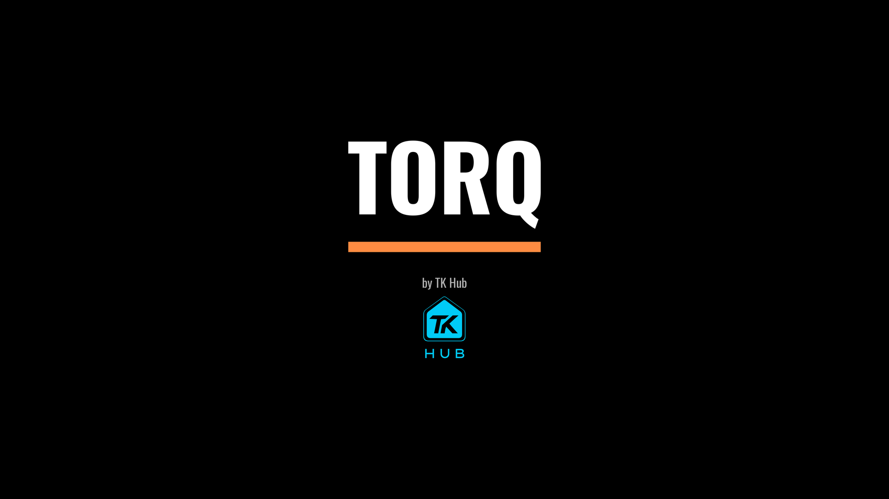
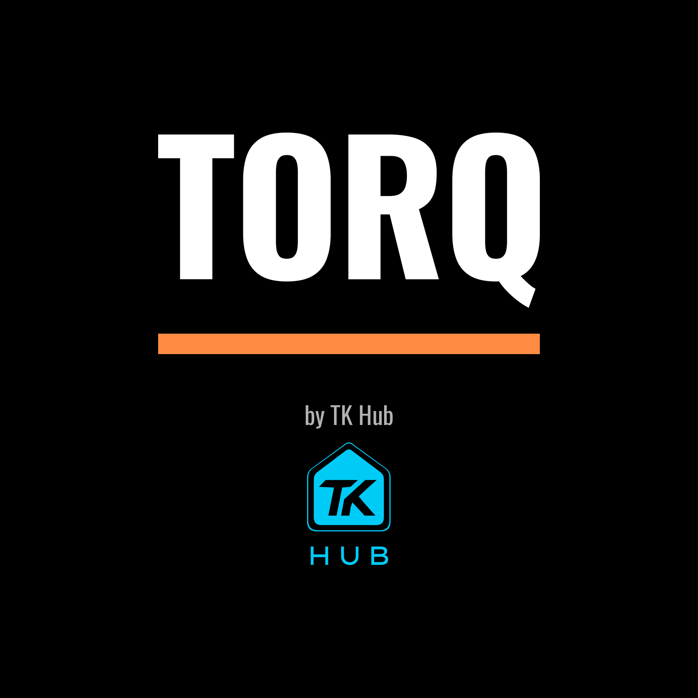
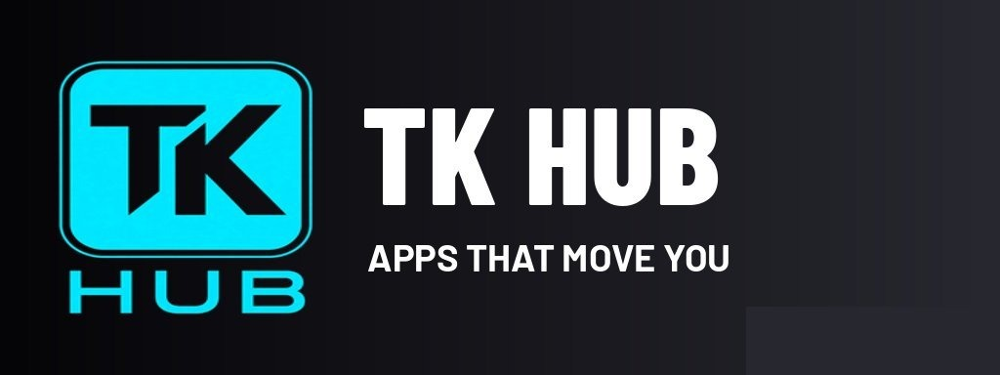
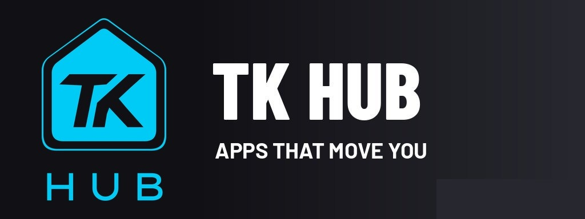

TORQ: launch screen + TK Hub logo
Preview only, not published. Unreal game build 7c1a5ef (branch claude/eager-meitner-h5jzcz)
Terrell's launch orders (Nov 13): no added delay (the logo shows only while the game is actually loading, never for a set time; skipped on a fast launch) and one splash (TORQ large and centred, "by TK Hub" with the smaller TK Hub logo beneath). The TK Hub logo now comes from Terrell's vector master, so it is sharp and shows the full roof.
1. The one launch screen (1080p, as the game draws it)

2. Android launch image (same picture, same size)
3. Full-resolution master (2048 x 2048)

4. TK Hub billboard at the drag strip


What still needs a device
- Launch three times on the TK desktop and the phone: one screen while loading, straight to the menu, nothing held after loading.
- Look at the billboard in game at the drag strip.